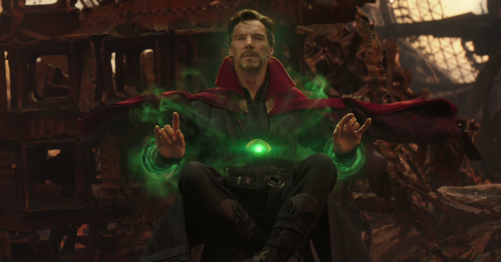

Jóia do tempo
Poderes
Imagine uma Joia capaz de transportar você para qualquer período histórico, seja no passado ou no futuro. A Joia do Tempo dá ao seu portador total domínio sobre a dimensão temporal, sendo capaz até de manipular os acontecimentos e alterar o rumo da história.
Esta joia pode também ser utilizada como arma,por meio da criação de ciclos temporais de onde as vítimas não conseguem escapar. Planetas inteiros podem ficar aprisionados em ciclos fechados, repetindo-se por toda a eternidade.
← Voltar